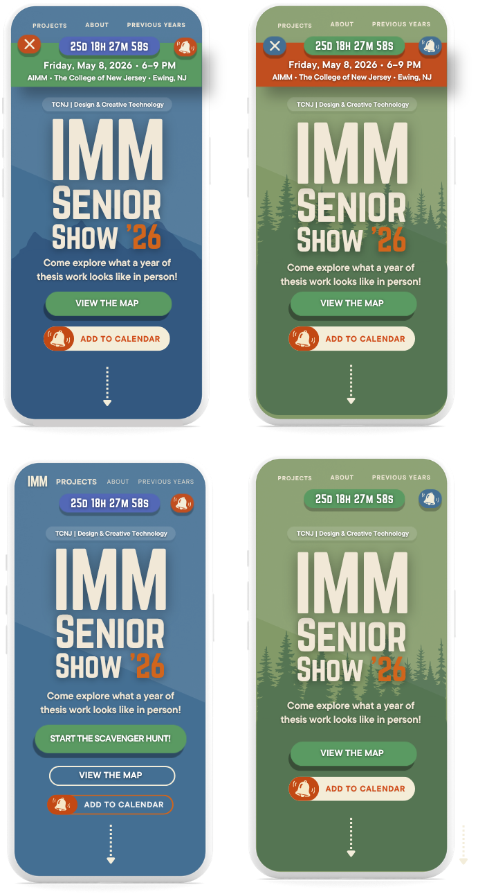
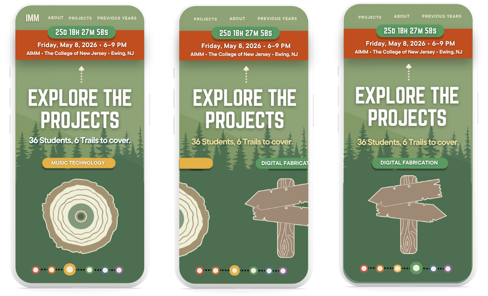
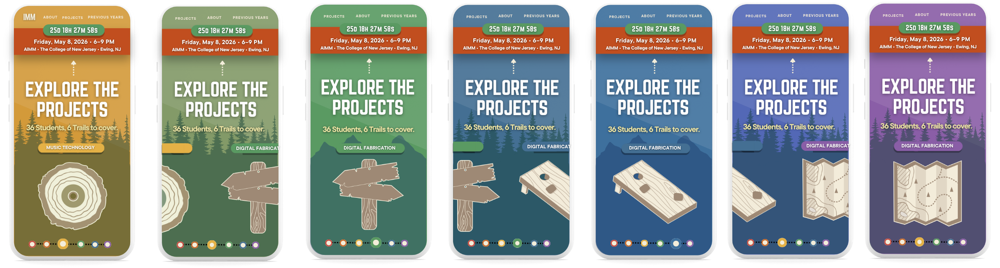
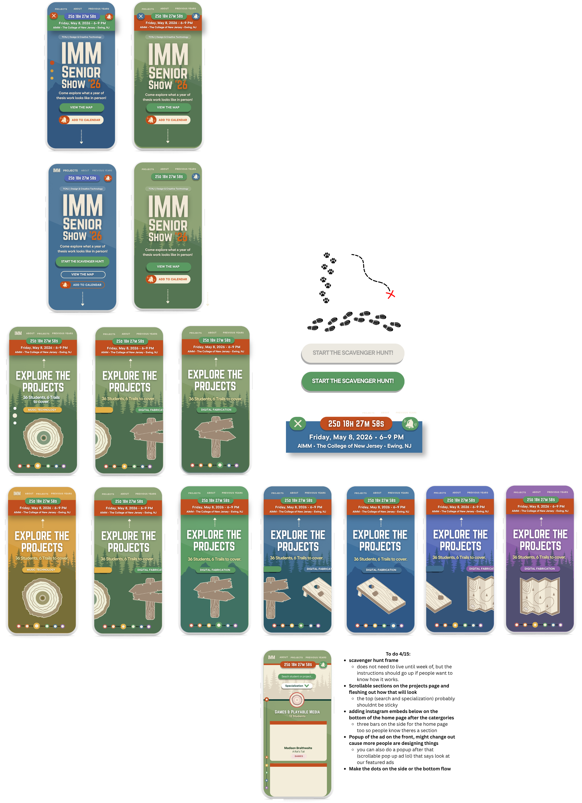
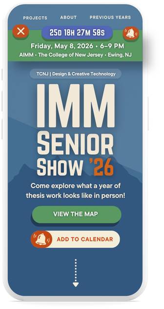
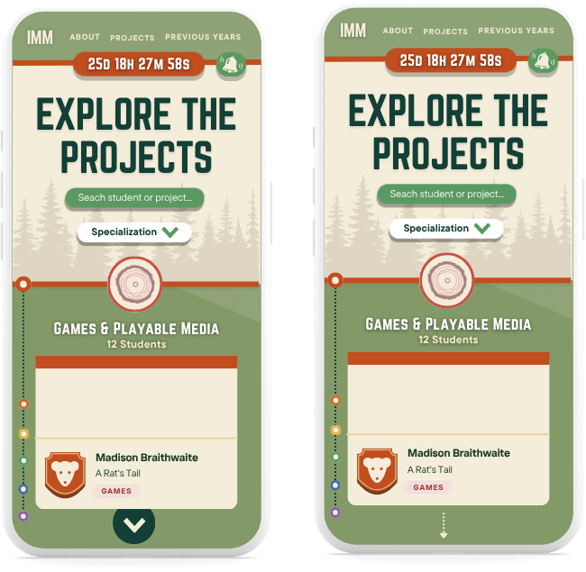
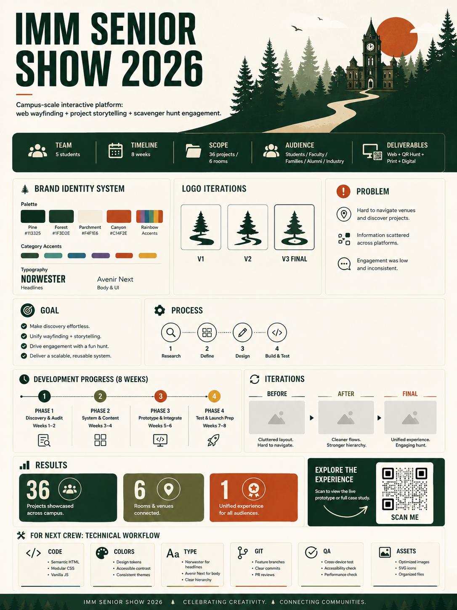
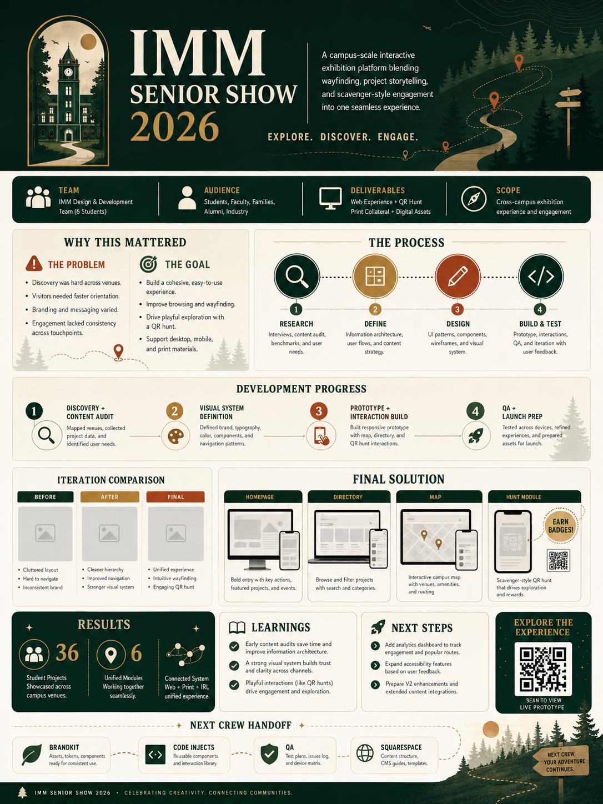
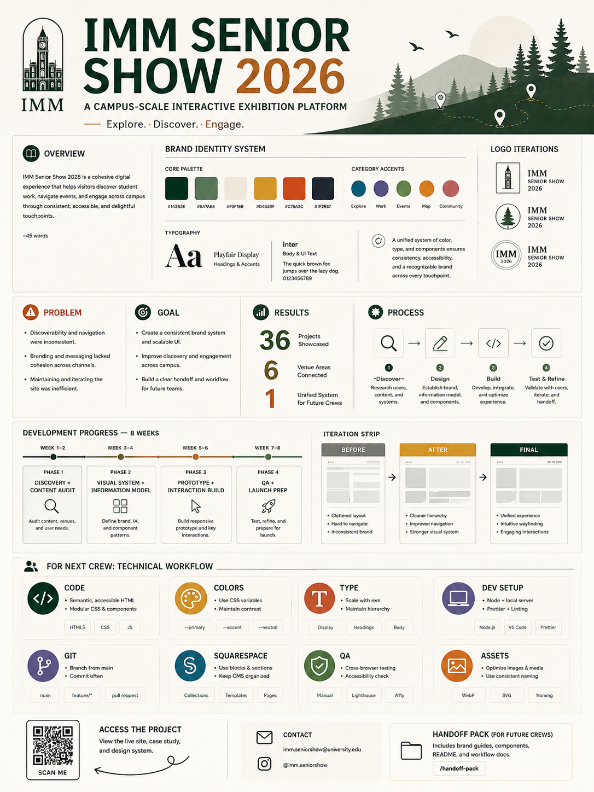

Discovery & Wireframes
Audited the existing Squarespace site, mapped all student content, and defined navigation needs across homepage, directory, map, and individual project pages. Initial wireframes sketched in Canva and iterated through multiple layout directions.




Visual System & Brand
Defined the brand kit: Norswester + Auxenr Next typography, five-color palette (Pine, Forest, Parchment, Canyon, Rainbow), and a category-color system for 8 IMM tracks. Explored homepage layout directions before locking the final system.



Prototype & Interaction Build
Built the full Squarespace Code Inject system — 19 HTML/CSS/JS files injected across every page type. Features included the interactive campus map, student directory with filtering, QR scavenger hunt, badge-book archive, and print-ready room maps.
Across 19 Code Inject files deployed into Squarespace — no frameworks, no build tools. Semantic, accessible markup throughout.
QA, Launch & COSA Documentation
Cross-browser testing, accessibility check, print map QA, and final content integration for all 36 student projects. Prepared handoff documentation and conference poster for COSA presentation — three poster iterations developed for different audience contexts.


